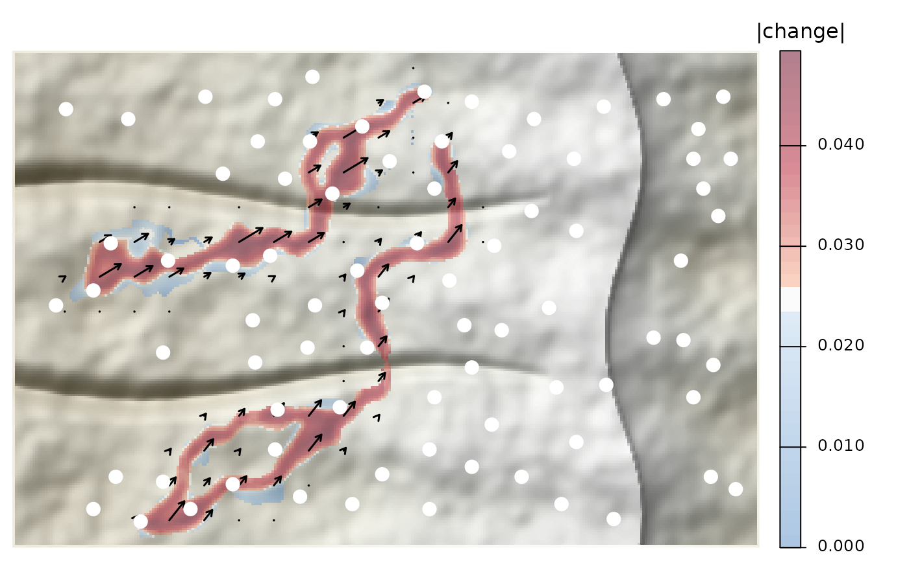

Draws a map from map_pairwise() over shaded relief. Change is colored on
a three-tone scale: cool blue below threshold, a narrow white band at it,
and red above it, so the areas under most pressure stand out. With a
directional map, arrows from shift_arrows() show the net direction.
Arguments
- map
A map from
map_pairwise().- dem
Optional elevation
SpatRasterfor the relief.- sites
Optional
sfpoints to draw on top.- col_sites
Fill colors for
sites(recycled, or one per site).- threshold
Value drawn in white. Defaults to the median of the map.
- smooth
Width (in cells) of a moving-average window applied to the displayed surface only; 1 for none.
- alpha
Opacity of the change layer.
- arrows
Draw arrows (needs a directional map).
- cells, scale
Passed to
shift_arrows().- main, legend_title
Title and legend title.
Examples
# \donttest{
ex <- corridor_example(acc = TRUE)
v <- both_directions(data.frame(from = c("M03", "M08"), to = c("M40", "M45"), value = 0.05))
v$value[3:4] <- -0.05
plot_shift(map_pairwise(v, ex$acc, ex$sites), dem = ex$dem, sites = ex$sites)

# }